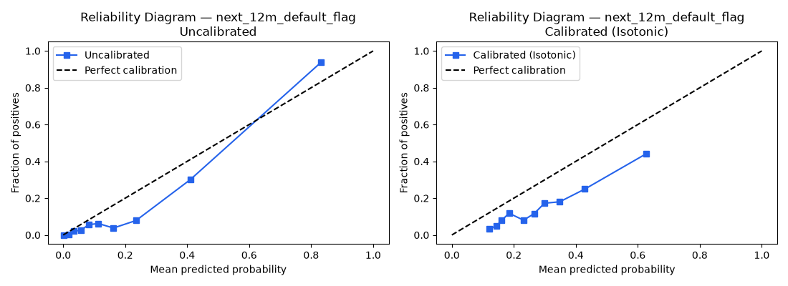
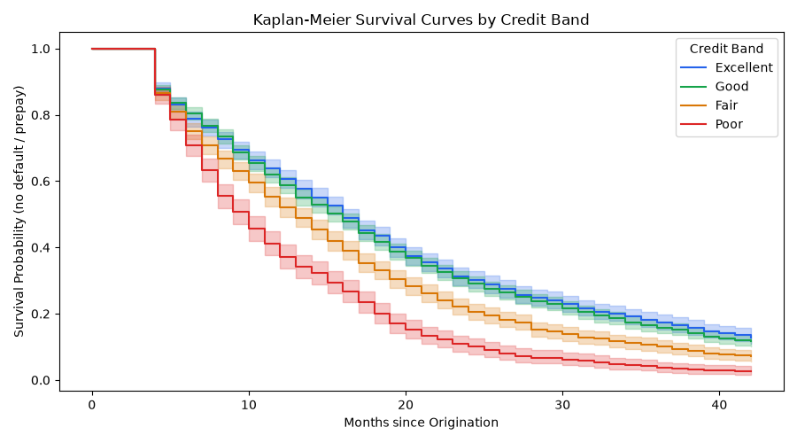
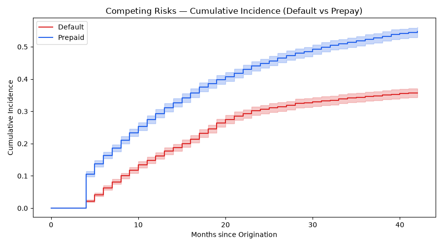
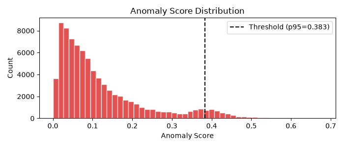
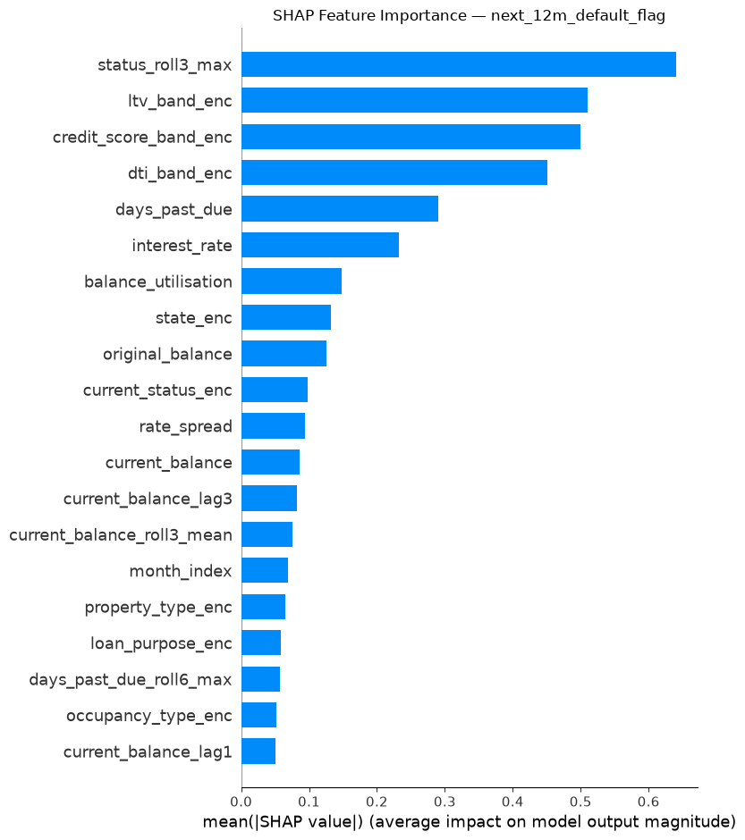
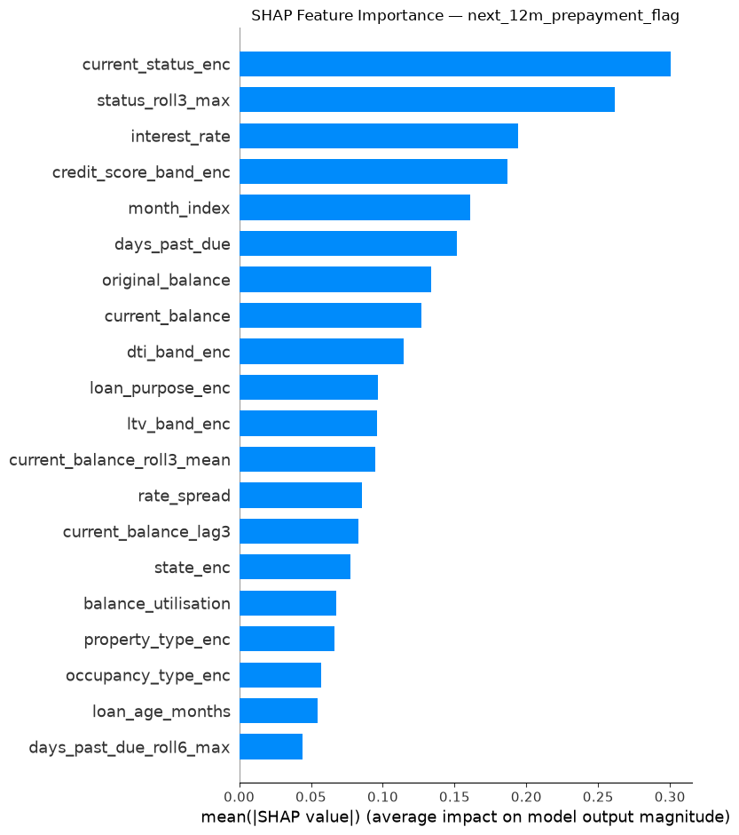
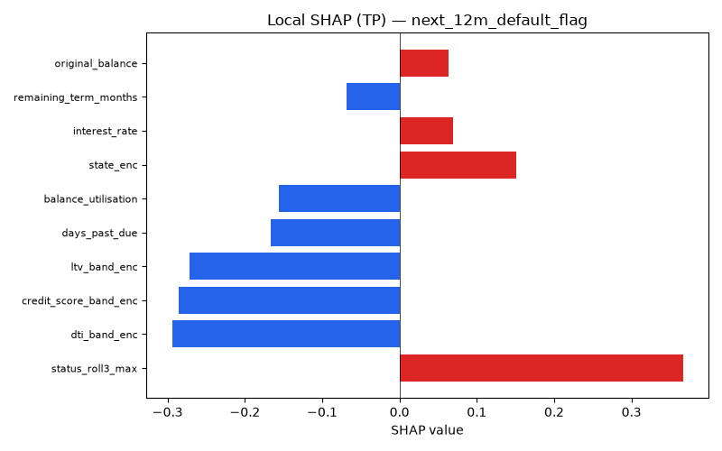
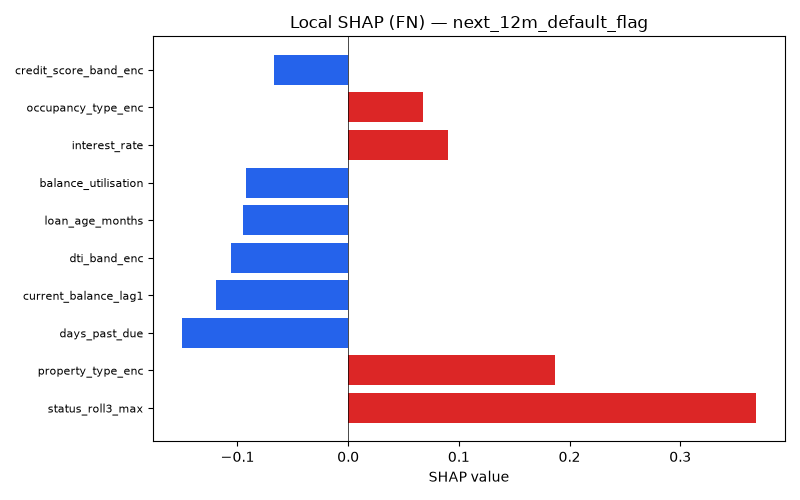
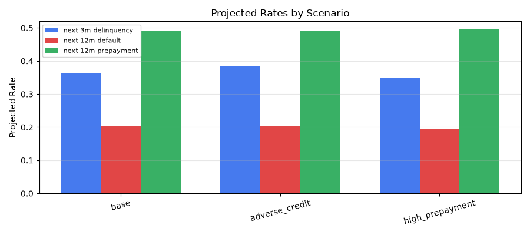
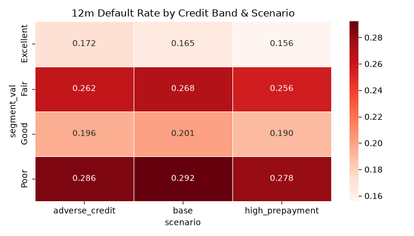

End-to-end ML pipeline for mortgage delinquency, default & prepayment prediction — with SHAP explainability, anomaly detection, and stress-scenario simulation.
Fully automated via python run_all.py --reset. Every stage checkpoints its output — re-runs only what changed.
81,189 rows profiled for missingness (MCAR + MNAR), outlier detection, rule violations, PSI/KS drift. Batch DQ score: 0.846.
35 features: rolling balance stats, DPD lags, categorical encodings. Strict out-of-time split — train ≤ month 20, val 21–25, test 26–30. Auto leakage check.
LightGBM (champion) vs Logistic Regression (baseline) for 4 binary targets. Early stopping on val; Sigmoid calibration.
Kaplan-Meier curves by credit band, Cox PH (C-index 0.562), competing-risks CIF plot for Default vs Prepayment.
Isolation Forest + rule-violation scoring. 6.1% of test-window records flagged. Auto recommended_action per loan-month.
TreeExplainer on all binary classifiers. Global importance, local TP/FP/FN waterfall plots, per-prediction entropy scores.
Base, adverse-credit, and high-prepayment scenarios — segment-level default projections by credit band, state, and servicer.
Interactive charts built from real model outputs. Source: reports/model_metrics_report.md and submission/submission.csv.




All metrics from strict out-of-time held-out test set (months 26–30). Source: reports/model_card.md.
prob_default_12m)status_roll3_maxprob_prepayment_12m)current_status_encSHAP TreeExplainer applied per binary classifier. Global importance + local TP/FN waterfall plots. Source: reports/explainability_report.md.




Three forward-looking macro scenarios applied to the full portfolio. Source: reports/scenario_report.md.


Disclosed intentionally. Source: reports/model_card.md & ai_dev_log/AI_DEVELOPMENT_LOG.md.
Validation ROC-AUC is 0.9277 vs test 0.7968 — a 13pp drop. A synthetic macro-shock in months 15–18 sits entirely in the training window. The model may overestimate risk in the quieter test period, producing excess false positives.
Scenario sensitivity is limited because the macro-shock is absorbed into the training distribution. True out-of-distribution stress testing would require injecting shocks that the model has never seen during training.
SHAP for the next_state multiclass predictor fails at runtime due to a multidimensional output array (35, 7). Explainability is restricted to the four binary classifiers.
An earlier approach used rank-based Beta distribution rescaling to force variance into probability outputs — this was wrong. It fabricated signal without fixing the upstream bug (simulation truncation causing zero positives in val/test). Fixed properly by extending N_MONTHS to 42 and correcting the trajectory loop. Full account in AI_DEVELOPMENT_LOG.md.